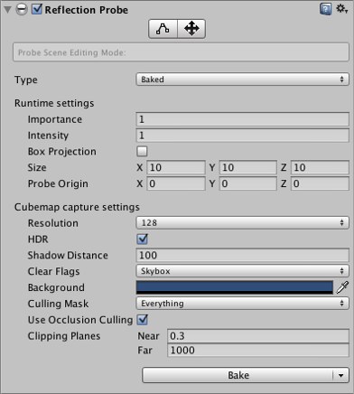

Reflection Probe
A Reflection Probe is rather like a camera that captures a spherical view of its surroundings in all directions. The captured image is then stored as a Cubemap that can be used by objects with reflective materials. Several reflection probes can be used in a given scene and objects can be set to use the cubemap produced by the nearest probe. The result is that the reflections on the object can change convincingly according to its environment.

Properties

| Property: | Function: |
|---|---|
| Type | Choose whether the probe is for a Baked, Custom or Realtime setup? |
| Dynamic Objects | (Custom type only) Forces objects not marked as Static to be baked in to the reflection. |
| Cubemap | (Custom type only) Sets a custom cubemap for the probe. |
| Refresh Mode | (Realtime type only) Selects if and how the probe will refresh at runtime. The On Awake option renders the probe only once when it first becomes active. Every Frame renders the probe every frame update, optionally using Time Slicing (see below). The Via Scripting option refreshes the probe from a user script command rather than an automatic update. |
| Time Slicing | (Realtime type only) How should the probe distribute its updates over time? The options are All Faces At Once (spreads update over nine frames), Individual Faces (updates over fourteen frames) and No Time Slicing (the update happens entirely within one frame). See below for further details. |
| Runtime settings | |
| Importance | The degree of "importance" of this probe compared to its neighbours. Higher values indicate greater importance; more important probes will have priority over less important one in cases where an object is within range of two or more probes. This setting also affects the Blending, explained here. |
| Intensity | The intensity modifier that is applied to the texture of this probe in its shader. |
| Box Projection | Check this box to enable projection for reflection UV mappings. |
| Box Size | The size of the box in which the reflection will be applied to the GameObject. The value is not affected by the Transform of the GameObject. Also used by Box Projection. |
| Box Offset | The center of the box in which the reflections will be applied to the GameObject. The value is relative to the position of the GameObject. Also used by Box Projection. |
| Cubemap capture settings | |
| Resolution | The resolution of the captured reflection image. |
| HDR | Should High Dynamic Range rendering be enabled for the cubemap? This also determines whether probe data is saved in OpenEXR or PNG format. |
| Shadow Distance | Distance at which shadows are drawn when rendering the probe. |
| Clear Flags | Option to specify how empty background areas of the cubemap will be filled. The options are Skybox and Solid Color. |
| Background | Background colour to which the reflection cubemap is cleared before rendering. |
| Culling Mask | Allows objects on specified layers to be included or excluded in the reflection. See the section about the Camera's culling mask on the Layers page. |
| Use Occlusion Culling | Should occlusion culling be used when baking the probe? |
| Clipping Planes | Near and far clipping planes of the probe's "camera". |
Details
There are two buttons at the top of the Reflection Probe Inspector window that are used for editing the Size and Probe Origin properties directly within the Scene. With the leftmost button (Size) selected, the probe's zone of effect is shown in the scene as a yellow box shape with handles to adjust the box's size.

The other button (Origin) allows you to drag the probe's origin relative to the box. Note that the origin handle resembles the Transform position handle but the two positions are not the same. Also, the rotation and scale operations are not available for the probe box.

The probe's Type property determines how the reflection data is created and updated:
- Baked probes store a static reflection cubemap generated by baking in the editor.
- Custom probes store a static cubemap which can either be generated by baking or set manually by the user.
- Realtime probes update the cubemap at runtime and can therefore react to dynamic objects in the scene.
To make use of the reflection cubemap, an object must have the Reflection Probes option enabled on its Mesh Renderer and also be using a shader that supports reflection probes. When the object passes within the volume set by the probe's Size and Probe Origin properties, the probe's cubemap will be applied to the object.
You can also manually set which reflection probe to use for a particular object using the settings on the object's Mesh Renderer. To do this, select one of the options for the Mesh Renderer's Reflection Probes property (Simple, Blend Probes or Blend Probes and Skybox) and drag the chosen probe onto its Anchor Override property.
See the Reflection Probes section in the manual for further details about principles and usage.